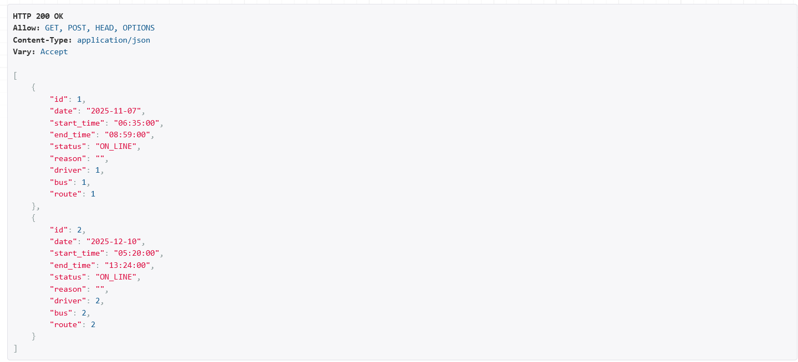
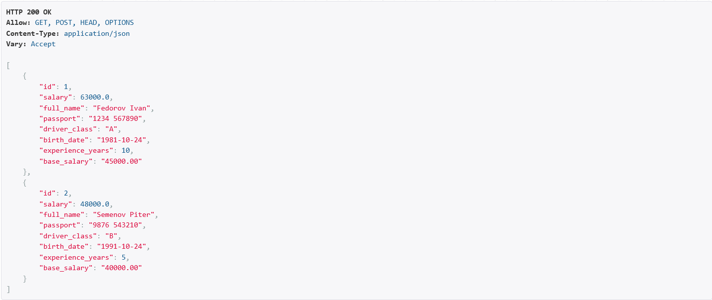
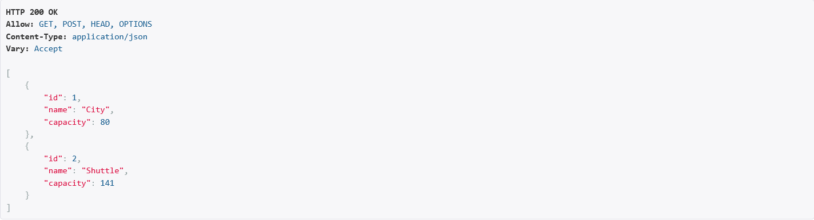
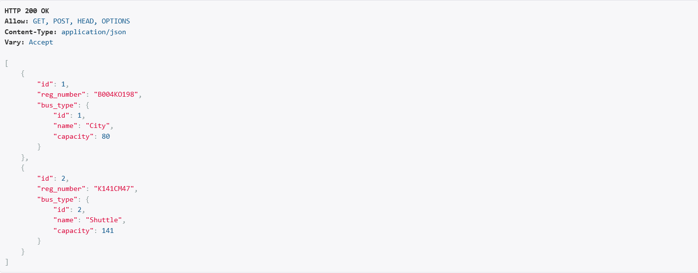
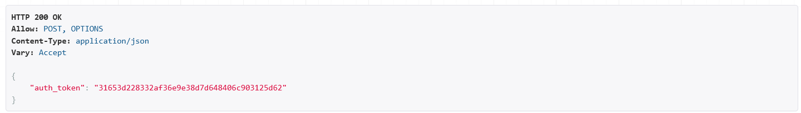
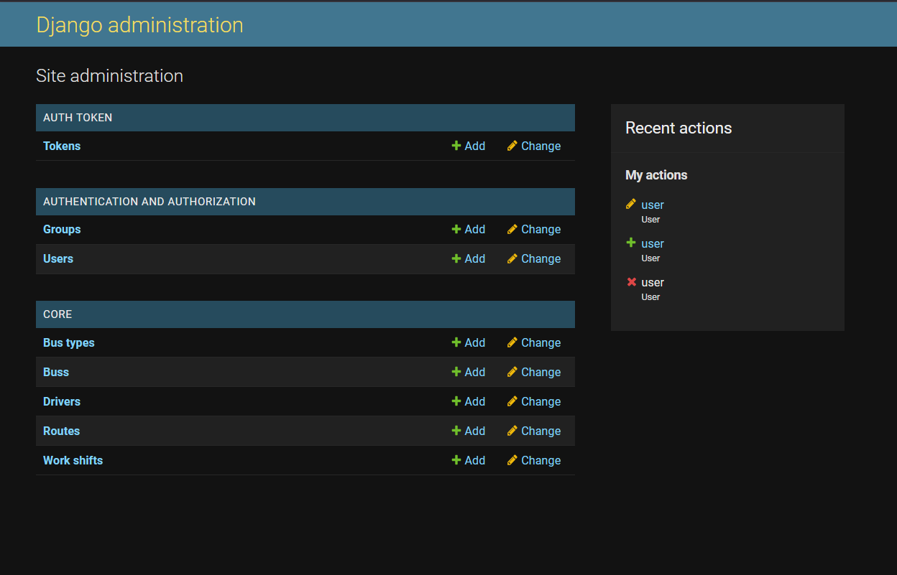

РЕАЛИЗАЦИЯ СЕРВЕРНОЙ ЧАСТИ ПРИЛОЖЕНИЯ СРЕДСТВАМИ DJANGO И DJANGORESTFRAMEWORK
Задание:
Реализовать сайт, используя фреймворк Django 3, Django REST Framework, Djoser и СУБД PostgreSQL *, в соответствии с вариантом задания лабораторной работы.
- Реализовать модель базы данных средствами DjangoORM.
- Реализовать логику работу API средствами Django REST Framework (используя методы сериализации).
- Подключить регистрацию / авторизацию по токенам / вывод информации о текущем пользователе средствами Djoser.
Ход выполнения
Модели данных
Для выполнения данной лабораторной работы я использовал вариант 9(программная система, предназначенная для диспетчера автобусного парка)
- BusType — хранит информацию об название типа (городской, междугородний и т. п.), вместимость.
- Bus — содержит государственный регистрационный номер, принадлежность к типу BusType.
- Route — хранит номер маршрута, начальная и конечная точки, время начала/окончания движения, интервал движения, протяжённость (в минутах).
- Driver — информация о водителе: ФИО, паспортные данные, водительский класс, стаж и базовый оклад + надбавки.
- WorkShift — дату смены, водителя, автобус, маршрут, время начала/окончания работы, статус и причину (если не вышел).





Реализация API через DRF
Для каждой модели создан ModelViewSet.
На примере класса водитель:
class DriverViewSet(ModelViewSet):
queryset = Driver.objects.all()
serializer_class = DriverSerializer
Сериализатор:
class DriverSerializer(serializers.ModelSerializer):
class Meta:
model = Driver
fields = '__all__'
read_only_fields = ['salary']
Маршрутизация через DefaultRouter:
router.register('drivers', DriverViewSet)
router.register('buses', BusViewSet)
router.register('bus-types', BusTypeViewSet)
router.register('routes', RouteViewSet)
router.register('shifts', WorkShiftViewSet)
API:
/api/drivers/
/api/buses/
/api/routes/
/api/shifts/
Авторизация и регистрация (Djoser)
Авторизация реализована по токенам:
Регистрация:
POST /auth/users/
Получение токена:
POST /auth/token/login/

Панель администратора
Django Admin позволяет:
- добавлять автобусы, водителей, маршруты
- редактировать смены
- смотреть данные в удобных таблицах

Вывод
В ходе лабораторной работы была конструктивно разработана серверная часть системы для диспетчера автобусного парка на базе Django, DRF и Djoser. Реализованы все ключевые элементы: модели данных, REST API, сериализация, токенная авторизация и административное управление через Django Admin.
Проект продемонстрировал уверенное владение Django ORM, маршрутизацией, инструментами Django REST Framework, а также умение организовывать логику приложения и структурировать данные в соответствии с предметной областью.